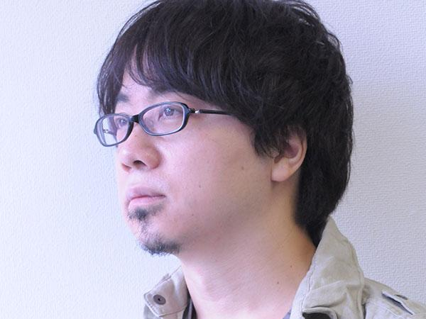
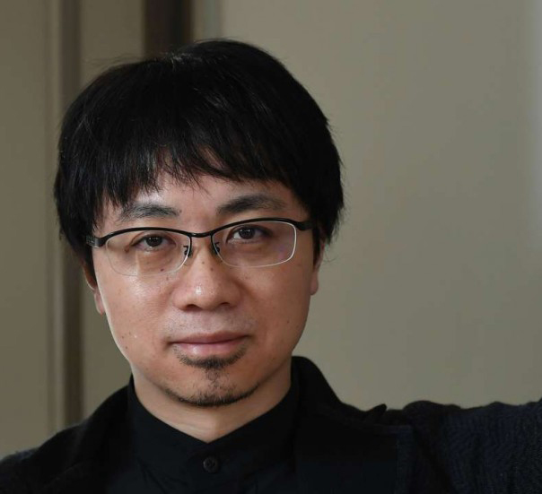
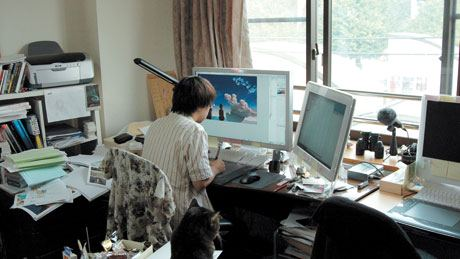
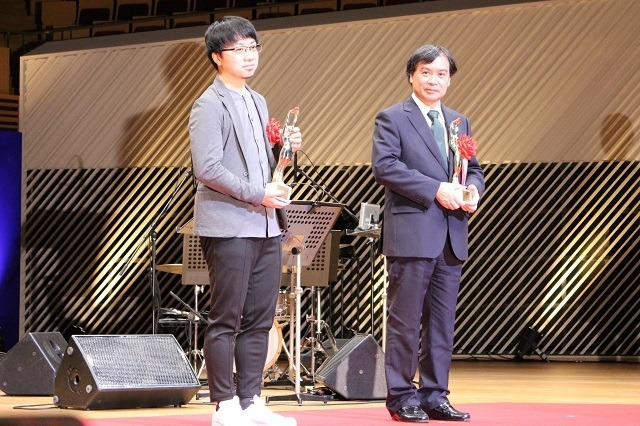
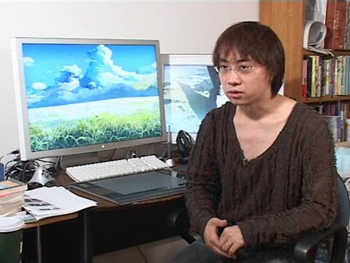
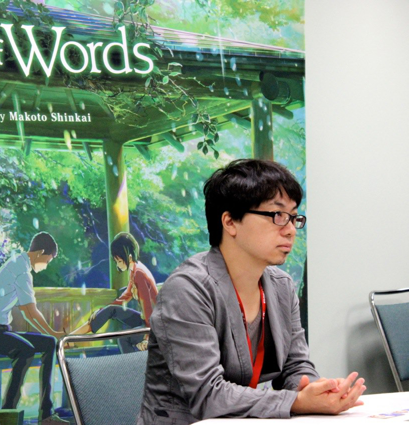
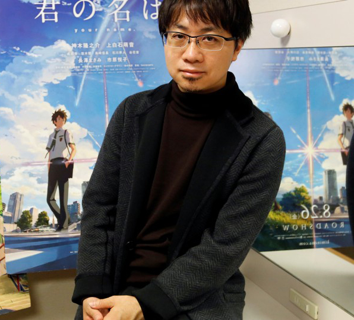

Dopo aver frequentato la facoltà di letteratura giapponese all'università, decide di dedicarsi alla sua passione giovanile per quegli anime, manga e romanzi che ha amato dalle scuole medie, creando completamente da solo le sue opere. A partire da 5 cm per second, comunque, si avvale dell'aiuto di un pur minimo staff, mantenendo comunque il controllo totale sia del lato artistico sia tecnico dell'opera che sta realizzando.

Shinkai è un grande appassionato delle opere di Hayao Miyazaki (in particolare del film Laputa - Castello nel cielo), tanto che alcune riviste di settore lo identificano come suo erede artistico. In un'intervista ha dichiarato che probabilmente i libri di Haruki Murakami, di cui è un grande fan, hanno influenzato il suo stile narrativo.

Shinkai dopo l'università inizia a lavorare come grafico per la Falcom, una società di videogiochi, in quel periodo realizza la sua prima opera, Kanojo to kanojo no neko, un cortometraggio animato del 1999 filmato in bianco e nero. L'OAV mostra la giornata di un gatto e della sua giovane padrona vista dagli occhi dell'animale. Quest'opera di debutto ha conquistato diversi premi internazionali nella sua categoria, come il gran premio del DoGA CG Animation del 2000.

Dopo aver vinto il premio Grand Prize, Shinkai iniziò a pensare a un seguito mentre continuava a lavora come disegnatore per la compagnia di videogiochi Falcom. Qualche mese dopo, nel giugno del 2000, Shinkai ebbe l'ispirazione per La voce delle stelle (ほしのこえ Hoshi no koe), disegnando una ragazza in un pozzo che afferra un cellulare. Qualche tempo dopo venne messo sotto contratto da Mangazoo, che gli offrì di lavorare con lui, sovvenzionandolo cosicché potesse trasformare la sua idea in un anime che potesse essere venduto. Nel maggio 2001 Shinkai lasciò il suo lavoro alla Falcom per iniziare a lavorare a Voices of a Distant Star. In un'intervista Shinkai ha dichiarato che la produzione prese attorno ai sette mesi di "vero lavoro".

Il successivo progetto di Shinkai fu 5 cm per second (秒速5センチメートル Byōsoku go senchimētoru), che ebbe la premiére il 3 marzo 2007. Il film consiste in tre cortometraggi intitolati Ōkashō, Cosmonaute 5 Centimeters per Second. La durata totale è di circa un'ora. Nel settembre del 2007 venne realizzato uno spot televisivo per il principale quotidiano di Nagano, Shinano Mainichi Shinbun, animato da Makoto Shinkai. Parallelamente ai propri progetti individuali, Shinkai lavora come assistente all'animazione di visual novel per la Minori.

Il suoi lavori successivi furono Someone's Gaze (だれかのまなざし Dareka no Manazashi) proiettato per la prima volta il 10 febbraio 2013 e Il giardino delle parole (言の葉の庭 Kotonoha no niwa) distribuito il 31 maggio dello stesso anno. Il film Your Name. (君の名は。 Kimi no na wa.), distribuito il 26 agosto 2016, è stato riconosciuto dalla critica con acclamazione, lodato per la sua animazione e l'impatto emozionale, ed è stato inoltre un successo commerciale, diventando il quarto film con l'incasso più alto di tutti i tempi in Giappone e, a partire dal 16 gennaio 2017, il film anime con l'incasso più alto di tutti i tempi sorpassando La città incantata(千と千尋の神隠し Sen to Chihiro no kamikakushi) di Hayao Miyazaki.

Il film Your Name. (君の名は。 Kimi no na wa.?), distribuito il 26 agosto 2016, è stato riconosciuto dalla critica con acclamazione, lodato per la sua animazione e l'impatto emozionale, ed è stato inoltre un successo commerciale, diventando il quarto film con l'incasso più alto di tutti i tempi in Giappone e, a partire dal 16 gennaio 2017, il film anime con l'incasso più alto di tutti i tempi sorpassando La città incantata (千と千尋の神隠し Sen to Chihiro no kamikakushi?) di Hayao Miyazaki.